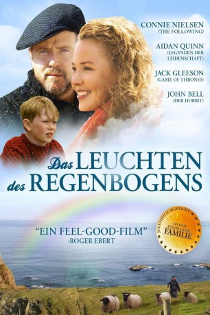
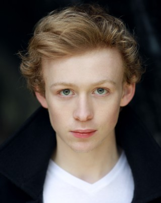
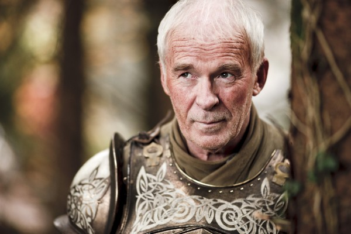

#2403 Das Leuchten des Regenbogens
Alternativ: A Shine of Rainbows
 
 IMDB-Wertung: 7.2 / 10
IMDB-Wertung: 7.2 / 10  Metascore: 52
Metascore: 52 
Der schüchterne, achtjährige Tomás lebt traurig und einsam in einem trostlosen Waisenhaus. Doch dann kommt ganz plötzlich Farbe in sein Leben: Maire O'Donnell, deren bezauberndes Lächeln und pure Lebensfreude selbst die dunkelsten Räume zum Leuchten bringen, erobert das Herz des kleinen Jungen im Sturm. Und ehe er sich versieht, fährt er zusammen mit Maire in einem Boot zu ihr nach Corrie Island vor der Küste Irlands. Dort trifft er Maires schweigsamen Ehemann Alec, der seine Enttäuschung über den schwächlichen Jungen nicht verbergen kann. Doch Maire lässt sich nicht entmutigen und zeigt Thomas die Wunder seiner neuen Welt...
Jahr: 2009
Dauer: 101 Minuten
FSK: 6
Land: Kanada Studio: Koch MediaTonspuren: DTS - ,
Untertitel:
Auflösung: 1080p (1920x800) Größe: 5120 MB
Genre: Drama, Familie
Regisseur: Vic Sarin
Drehbuch: Vic Sarin, Catherine Spear, Dennis Foon, Lillian Beckwith
Soundtrack: Keith Power
Darsteller:
 Connie Nielsen als Maire
Connie Nielsen als Maire Aidan Quinn als Alec
Aidan Quinn als Alec-  John Bell als Tomás
- Jack Gleeson als Seamus
- Niamh Shaw als Katy
-  Ian McElhinney als Father Doyle
- Fionn O'Shea als Orphan Boy #1
- Tara Alice Scully als Nancy
- Kieran Lagan als Ned
- Frances Quinn als Mrs. Kane
- Karl O'Neill als Fergus
- Joy McBrinn als Rag Lady
- Lee Satell als Rory
- Adam Downey als Jack
- Shane Mahon als Paddy
- Gary Healy als Orphan Boy #2
- Gerald Boner als Dr. Burner
- Sharon Simpkins als Teacher
- Laura Doherty als Nurse
- Greg McGuinness als Dermot
- Bonnie Bollivar als Gran
Datei: X:\2009(G-M)\Leuchten des Regenbogens, Das (2009, FSK6, 1920x800).mkv seit 05.11.2015
Festplatte: HD 2009(G-Z)-2010(A-F)
 Es gibt insgesamt 82 Filme in der Gruppe '2009(G-M)'
Es gibt insgesamt 82 Filme in der Gruppe '2009(G-M)'